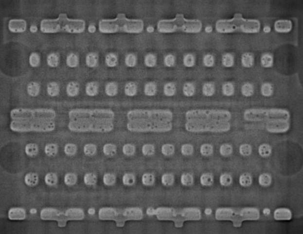
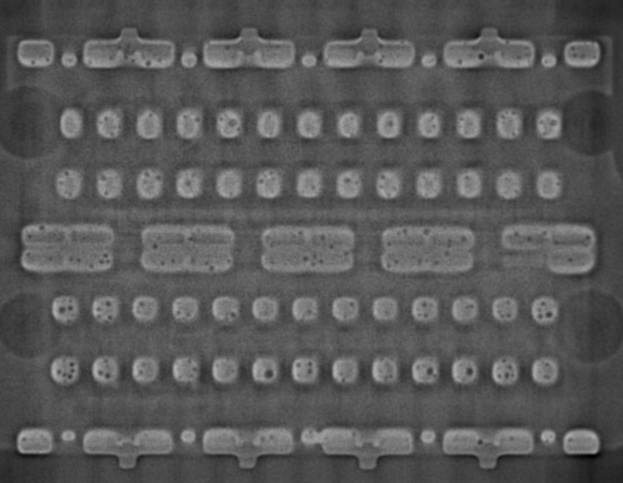
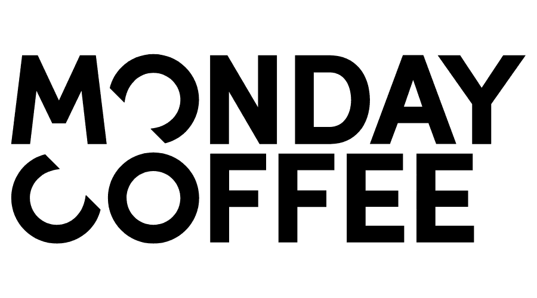
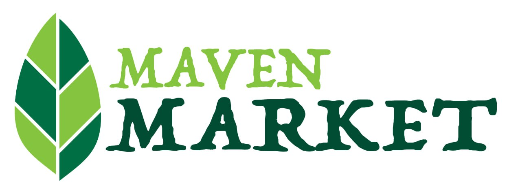
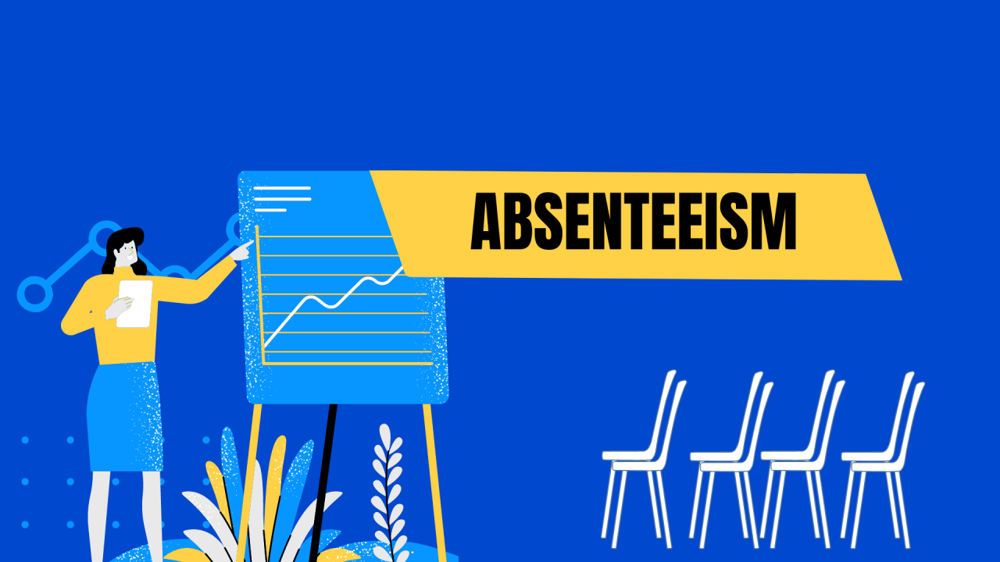
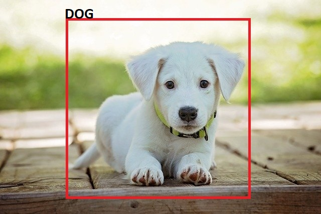
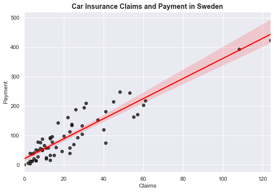

Comprehensive Analysis of Netflix Movies and TV Shows Using SQL
SQL wurde verwendet, um eine tiefgehende Analyse des Datensatzes von Netflix-Filmen und -Serien durchzuführen.
Das Projekt konzentrierte sich darauf, wichtige Erkenntnisse zu gewinnen und zentrale geschäftliche Fragestellungen
zu beantworten, sowie umsetzbare Empfehlungen auf Basis der Datenanalyse bereitzustellen.
Diese Arbeit hebt Fachwissen in den Bereichen Datenbankabfragen, Datenmanipulation und der Ableitung strategischer Erkenntnisse
zur Entscheidungsunterstützung hervor.
 

Dieses Projekt nutzt Autoencoder, um Röntgenbilder von Lötstellen in einer Produktionslinie zu klassifizieren.
Ziel ist es, die Defekterkennung zu automatisieren, indem Bilder in "io" (korrekt gelötete Verbindungen) und
"nio" (defekte Lötstellen) kategorisiert werden. Der Prozess umfasst die Datenvorbereitung, Bildvorverarbeitung
und das Training eines Autoencoder-Modells, um die Inspektionseffizienz und -genauigkeit in der
Fertigung zu verbessern.
Entwicklung eines Machine-Learning-Modells zur Vorhersage, ob ein Kunde erneut bei einem Hörbuchunternehmen einkaufen wird.
Unter Verwendung von 2 Jahren Engagement-Daten prognostiziert das Modell das Verhalten für die nächsten 6 Monate und ermöglicht gezieltes Marketing sowie Kosteneinsparungen.
Ziel: Klassifizierung von Kunden in "wahrscheinlich" (1) oder "unwahrscheinlich" (0), erneut zu kaufen.
Auswirkung: Optimierung der Marketingmaßnahmen durch Fokussierung auf Kunden mit hoher Kaufwahrscheinlichkeit.

Dieses Projekt konzentriert sich auf die Analyse von Verkaufsdaten von Monday Coffee, einem Online-Kaffeehändler,
der seit Januar 2023 tätig ist. Das Ziel ist es, die drei vielversprechendsten Städte in Indien zu identifizieren,
um dort neue Coffeeshops zu eröffnen. Die Erkenntnisse basieren auf Verbrauchernachfrage und Verkaufsleistungskennzahlen,
um eine strategische Expansion zu unterstützen.

Dieses Power-BI-Projekt bietet interaktive Dashboards und Einblicke für Marven Market. Es umfasst dynamische Visualisierungen, Verkaufs-Trendanalyse,
Kundensegmentierung und Produktleistungskennzahlen. Mit fortschrittlichem Datenmodellierung und Drillthrough-Funktionen demonstriert
es Fachwissen in Business Intelligence und visueller Datenaufbereitung.

Dieses Projekt konzentriert sich auf die Analyse von Fehlzeiten-Daten, um Muster zu erkennen und Mitarbeiterabwesenheiten vorherzusagen.
Mithilfe eines Datensatzes von 700 Personen wurden die wichtigsten Faktoren, die zu Fehlzeiten beitragen, untersucht, transformiert
und für die Modellierung aufbereitet. Das logistische Modell liefert Einblicke in die Einflussfaktoren von Fehlzeiten und
kann Organisationen dabei helfen, Anwesenheitsprobleme proaktiv anzugehen.
Dieses Projekt nutzt ein Künstliches Neuronales Netz (ANN), um vorherzusagen, ob ein Bankkunde loyal bleibt oder die Bank verlässt.
Die Daten wurden mit OneHotEncoding, einem Train-Test-Split und Standardisierung vorverarbeitet. Ein zweischichtiges ANN wurde trainiert,
um das Kundenverhalten zu klassifizieren, wobei die Vorhersage lautet: "Der Kunde bleibt loyal und verlässt die Bank nicht."
Dieses Modell hilft Banken, gefährdete Kunden zu identifizieren und Strategien zur Kundenbindung zu verbessern.

Dieses Projekt nutzt SQL, um COVID-19-Daten zu analysieren und globale Trends bei Fällen, Todesfällen und Impfungen aufzudecken.
Durch den Einsatz fortgeschrittener Techniken wie CTEs, Joins und Fensterfunktionen werden wichtige Muster identifiziert
und wertvolle Einblicke in die Auswirkungen der Pandemie gewonnen. Diese Arbeit unterstreicht die Bedeutung datengetriebener
Analysen für das Verständnis globaler Herausforderungen und unterstützt fundierte Entscheidungen durch umsetzbare Erkenntnisse.

Dieses Projekt verwendet ein Convolutional Neural Network (CNN), um Bilder von Katzen und Hunden zu klassifizieren.
Der Datensatz umfasst 4000 Bilder von Katzen und 4000 Bilder von Hunden für das Training sowie jeweils 1000 Bilder für die Tests.
Bildaugmentation wurde angewendet, um die Modellleistung zu verbessern, gefolgt von der Erstellung und dem Training eines CNN-Modells.
Das Modell wurde mit Testdaten evaluiert und zur Vorhersage unbekannter Bilder verwendet, wobei neue Bilder in ein 2D-Array transformiert
werden mussten, um präzise Vorhersagen zu ermöglichen. Dieses Projekt demonstriert den effektiven Einsatz von CNNs
für Aufgaben der Bildklassifikation.

Das Projekt demonstriert die Erstellung verschiedener Datenvisualisierungen mit den Python-Bibliotheken Matplotlib und Seaborn.
Es umfasst grundlegende Diagrammtechniken wie Linienplots, Scatterplots, Histogramme, Balkendiagramme, Kreisdiagramme, Boxplots und Heatmaps.
Der Fokus liegt auf der Datenvorbereitung, der Anpassung von Diagrammen und der effektiven Kommunikation von Erkenntnissen durch visuelle Darstellungen.
Mit praktischen Beispielen und Code-Snippets dient das Projekt als wertvolle Ressource, um Datenvisualisierungstechniken in Python zu verstehen und anzuwenden.